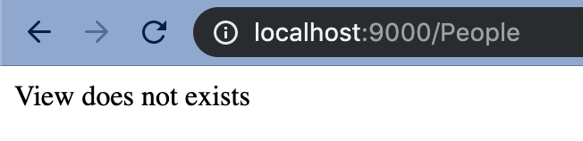
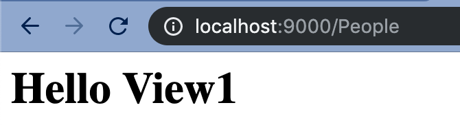

Creating your first MVC Project¶
In this exercise you are going to create your first MVC project.
It will include a SQL file, so you don't need to write the code for that.
What you need
For this exercise I will assume you are working with the following tools:
- VSCODE
- Docker (toolbox or native)
- Web Browser (Chrome)
- Git (bash or on a native terminal)
We will make use of the following VSCode Extensions
You can install these by typing in code --install-extension followed by the name after the colon listed below
- MySQL:
formulahendry.vscode-mysql - Docker:
peterjausovec.vscode-docker - Docker-Compose:
p1c2u.docker-compose - Browser Preview:
auchenberg.vscode-browser-preview
You will also need to be familiar with the documentation in this section.
Let's get started!
Setting up your project¶
Create a project named MVCEX01
Once you have that in place, the outcome should be that you have a folder called MVCEX01 and in the www should be the app and public folder structure from the second curl command.
Make sure you have the .env file loaded correctly, so that you see the following text on your screen:
Model does not exists
At this point you should also have a git repository setup and made your first commit and have it pushed to github.
The workflow above is standard for every project when using frameworks. So if this something that takes you a lot of time, then keep doing it until it becomes part of your project workflow.
Hint
In your www folder there is a folder called .demo and this folder has complete working files that make up MVC scenarios.
Creating a controller¶
Create a controller file called People.php and place it in the Controllers folder
Add the basic layout for the controller into that folder.
<?php
include(APPROOT . '/helper/helperfunctions.php');
class People extends Controller {
}
?>
The APPROOT is a constant that points the webserver to the app folder. You can see its definition in the startup.php file located in the helper folder.
As you may remember from the Controller explaination, the People controller inherits some content from the Controller class
In the People controller file we are going to add an action. Actions are normal functions and they hold the content that comes in from the model and send the content to the view.
Let's create a simple Index action to begin with:
public function index() {
return $this->view('people/view1', $data = []);
}
If you now navigate to http://localhost:8000/People (or http://192.168.99.100:8000/People) your webpage, you should see the message:
View does not exists

(For the attention to detail people, I am running my server temporarily on port 9000, but everything else works the same)
In the views folder create a folder called people and inside of that create a file called called view1.php .
In the view1.php file, just write
<h1>Hello View1</h1>
and save the file. After refreshing the page you should now see this:

Creating the model¶
Inside of the class need to point to a model, since we are going to be using a database. So for now, just create a file called _People.php (Note the underscore) inside of the Models folder.
In the People Controller add this piece of code, above the index action.
Class contructor
public function __construct() {
$this->people = $this->model('_People');
}
At this stage, if you refresh the page, you will see that you have an error that says it can't find the model class.
In the _People.php file, add the base code for a model which is:
Base Model
<?php
class _People {
public function title() {
return "View1 title loaded from a model";
}
}
?>
Warning
Your class name MUST BE the same name as the file name, as the system looks for both.
In the model above you can see that we have created a function for the title.
Let's add that to our controller.
Adding the model to the controller¶
Update the index action to look like this:
Updated index action
public function index() {
$title = $this->people->title();
$data = [
'title' => $title
];
return $this->view('people/view1', $data);
}
Next we need to reference that $title variable in the view.
Displaying the model in the view¶
Open up the view1.php and replace the current code with this code:
Loading the view
<?php
echo '<h1>'.$data['title'].'</h1>';
In the code above we type in our HTML code - HTML code is never typed in the model, but only in the view.
The fullstop is the php character to concatenate strings.
As you can see we are adding the $data associative array (which is also called a dictionary) and use the key that was set in the controller to access the data.
In this case $data['title'] is just a string, so it is pretty easy.
You should now see this:

In exercise 2 we will add data from the database to the view.